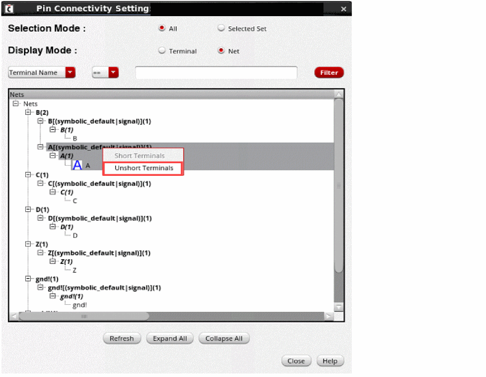

Unshorting Terminals in Pin Connectivity Form
To unshort the terminals in the Pin Connectivity Setting form:
- Select the terminal that you want to unshort. For unshorting, you must select terminals from a net that has a net count of more than one.
-
Right-click to display the shortcut menu and choose Unshort Terminals.
 - Click Close.
For example, consider a scenario where you unshort two terminal A and B. After the unshorting operation, terminal A is placed on its own previous net A and terminal B remains on the parent net.
There are certain possible scenarios while performing the unshorting operation.
Scenario 1
Net A contains two shorted terminals, A and B. On unshorting the terminals, if net B exists in the tree structure, then terminal B is moved to net B. If net B does not exist, a new net with name B is created and the terminal is moved to the new net.
Scenario 2
A tree structure contains net X and net B. Net X contains terminal A and net B contains terminal B.
When these terminals are shorted, these terminals are listed under net B. On unshorting the terminals, terminal A cannot be mapped to net X because net X becomes an internal net.
Related Topics
Shorting Terminals using the Pin Connectivity Setting Form
Working With Pin Connectivity Models
Return to top